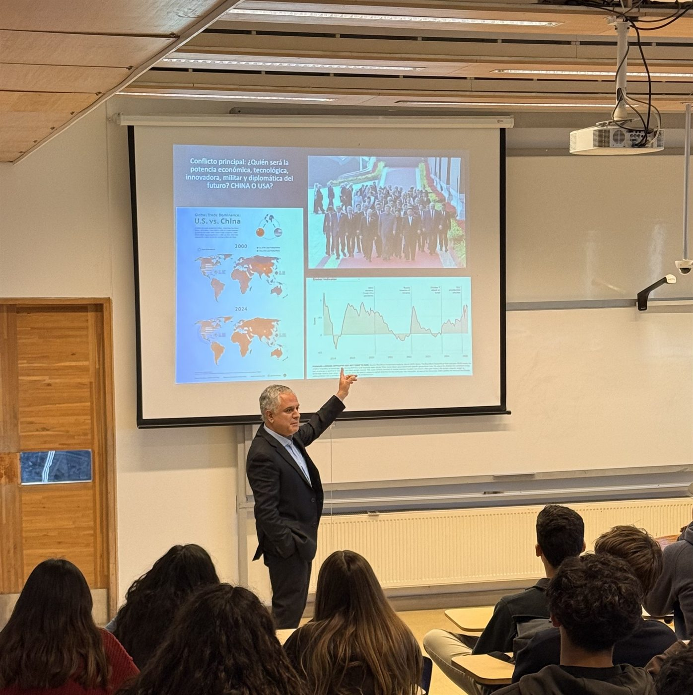
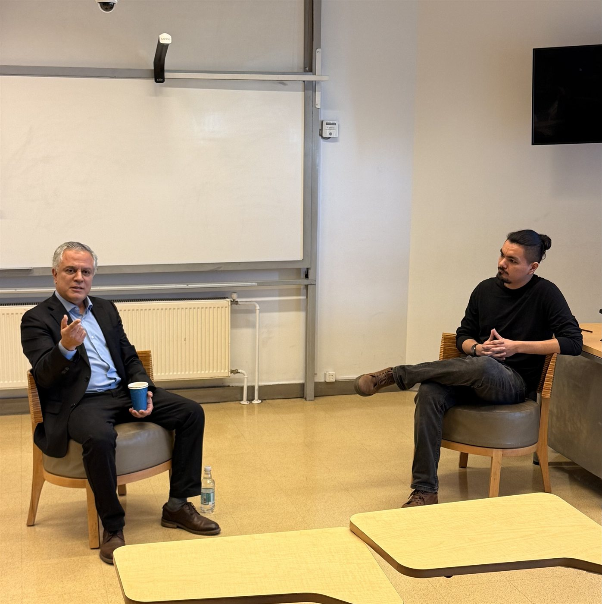

El martes 23 de junio de 2026, CEAPS realizó su primer conversatorio: “Entre Washington y Beijing: Chile frente a la competencia geoeconómica global”. La actividad buscó abrir una conversación universitaria sobre los cambios del orden internacional y los desafíos que enfrenta Chile en un escenario marcado por la rivalidad entre Estados Unidos y China.
El encuentro contó con la participación del profesor Fernando Alvarado, de la Escuela de Gobierno de la Universidad Adolfo Ibáñez, quien inició la jornada con una exposición sobre el panorama actual de la competencia geoeconómica global.
Luego, la actividad pasó a una modalidad de conversatorio guiada por Martín Castillo Jiménez, presidente de CEAPS. La conversación abordó distintos puntos clave para entender la disputa entre Washington y Beijing, sus efectos sobre América Latina y las preguntas estratégicas que se abren para Chile.
Ejes de la conversación
- El reordenamiento del sistema internacional y la competencia entre grandes potencias.
- La geoeconomía como dimensión central de la política internacional contemporánea.
- El rol de la tecnología, la inteligencia artificial y los sectores estratégicos.
- La posición de América Latina frente a la rivalidad entre Estados Unidos y China.
- Los desafíos de Chile ante ambas potencias y las decisiones que deberá enfrentar hacia el futuro.
Para CEAPS, este primer conversatorio marca el inicio de una agenda de actividades orientada a conectar actualidad, evidencia y discusión académica. La instancia permitió reunir a estudiantes y docentes en torno a una pregunta central para la vida pública: cómo comprender los cambios globales y qué tipo de respuestas puede construir Chile desde su posición en el mundo.


Registro en redes
La experiencia fue difundida por CEAPS en sus canales institucionales, con un resumen ex post de la actividad y de los principales temas discutidos.